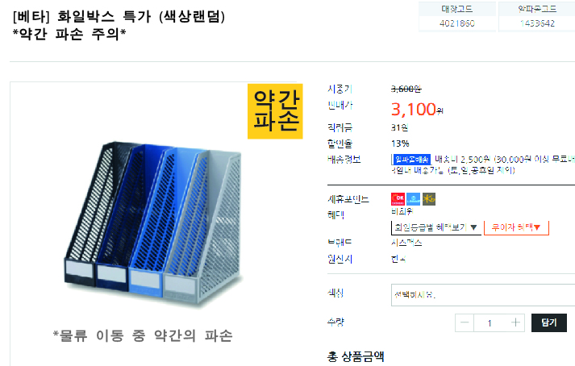
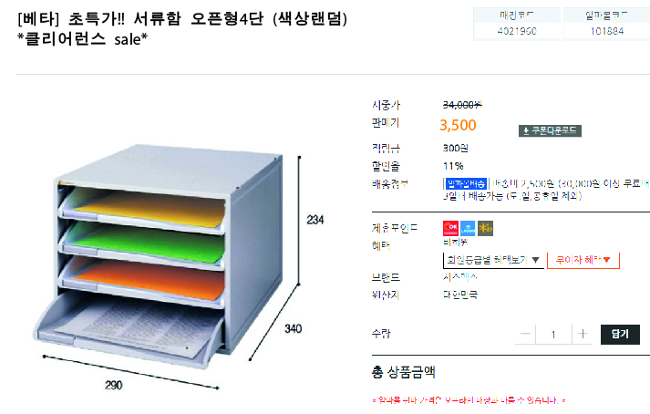

대한민국에서 가장 핫한 사무기기 및 문구류 판매점이자,
대학생들 및 학생들에게 필요한 학용품들을 구비한 판매점
그리고 합리적인 가격을 유지하기 위해 노력하는 문구점
파손되어서 정가에 판매가 되지 않는것들을 저렴한 가격에 판매하는 프로모션을 진행 하려고 한다.
파손이라는 단어가 거부감을 조장을 가져올수도 있겠지만, 사용 가능한 사무용품 및 학용품을 보다
더 저렴하게 판매하여 소비자들의 주머니를
열게끔 하는것 첫번째 목표이며, 두번째로는 처리하기 곤란한 파손된 용품들을 처리하는것을 목표로 한다.
위와같이 클리어런스 세일도 포함시켜 소비자에게 할인된 제품을 제공 받을 수 있게끔 한다.
소비자들에게 알파문구의 문구류를 저렴하게 구매할수있게끔 해준다.
청소년 및 청년 층을 공략하여, 문구시장을 보다 알릴수 있도록 한다.
물류 재고의 대한 해결 방안으로 안성맞춤